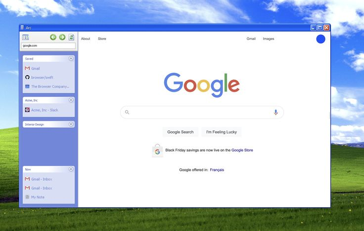

Web Browser
Category: Web Technology
A web browser is a software application used to access and view websites on the Internet. It allows users to retrieve, display, and interact with web pages that are written in HTML.
When a user enters a URL, the browser communicates with a web server using the HTTP protocol to request and display the web page.
Web browsers also rely on systems like DNS to translate domain names into IP addresses, enabling proper communication.

Figure: Example of a web browser interface